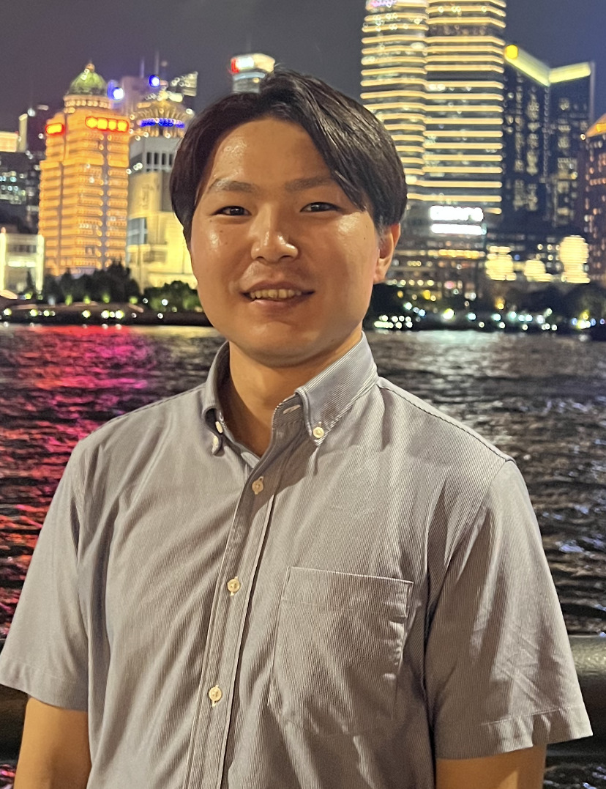

Master's Thesis
2024. Exploring Language Assessment Literacy Dimensions of Teachers in Japan: A Mixed Methods Study.
Supervisor: Prof. Yasuyo Sawaki

I am a PhD student in the Graduate School of Education at Waseda University, Japan.
My research is broadly situated in the field of language assessment and testing.
I am particularly interested in speaking assessment, language assessment literacy, rater training, and AI-mediated language assessment.
2024. Exploring Language Assessment Literacy Dimensions of Teachers in Japan: A Mixed Methods Study.
Supervisor: Prof. Yasuyo Sawaki
2022. Language Assessment Literacy of Pre-service and In-service Teachers in Japan: The Replication Study of Vogt and Tsagari (2014).
Supervisor: Prof. Yutaka Ishii
Principal Investigator, 38th EIKEN Research Grant.
Speaking Assessment in High School CLIL Classes: Rubric Development with Content Knowledge and Language Knowledge as Constructs.
Co-researchers: Chiho Young-Johnson and Daisuke Izumi
I am originally from Katori City, Chiba, Japan. My hometown is known for the Sawara Grand Festival.